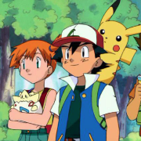

O ano 2000 na cultura de desenhos animados foi marcado pela continuação de clássicos como "Bob Esponja" e "Os Padrinhos Mágicos", refletindo a diversidade de estilos e temas da época
"As Três Espiãs Demais" é um animado envolvente que gira em torno das fascinantes missões de três adolescentes aparentemente comuns, Clover, Sam e Alex, que secretamente trabalham como espiãs para a agência de espionagem WOOHP. Combinando moda, amizade e muita ação, as espiãs enfrentam vilões astutos enquanto enfrentam os desafios típicos da adolescência. Cada uma delas traz habilidades únicas para a equipe, proporcionando um equilíbrio dinâmico entre personalidades e destrezas. A série destaca não apenas a força das protagonistas, mas também promove mensagens positivas sobre trabalho em equipe, empoderamento feminino e a importância da amizade, tornando "As Três Espiãs Demais" um favorito duradouro entre públicos de todas as idades.
"O Espetacular Homem-Aranha" é uma cativante adaptação animada das aventuras do icônico super-herói da Marvel. A série acompanha a vida dupla do jovem Peter Parker, que, após ser picado por uma aranha radioativa, adquire habilidades especiais. Ao assumir a identidade do Homem-Aranha, Peter enfrenta vilões perigosos enquanto lida com os desafios cotidianos da vida adolescente. Com uma narrativa envolvente, a animação destaca a resiliência, a responsabilidade e os valores fundamentais do Homem-Aranha, tornando-a uma adição notável ao vasto universo do super-herói. "O Espetacular Homem-Aranha" oferece uma experiência emocionante e inspiradora para fãs de todas as idades, explorando as complexidades do heroísmo e do amadurecimento.
"Os Padrinhos Mágicos" é uma animação encantadora que segue as aventuras de Timmy Turner, um garoto comum que recebe a ajuda mágica de seus padrinhos, Cosmo e Wanda. Esses seres mágicos estão sempre prontos para realizar os desejos de Timmy, mas nem sempre as coisas saem como planejado, resultando em situações hilárias e caóticas. A série destaca temas de amizade, imaginação e os desafios da infância, enquanto Timmy tenta equilibrar sua vida cotidiana com as extravagâncias concedidas pelos seus padrinhos. Com personagens cativantes e doses generosas de humor, "Os Padrinhos Mágicos" conquistou fãs de todas as idades, tornando-se uma alegre jornada pelos altos e baixos da magia e da vida cotidiana de um garoto comum.

"Pokemon" é uma icônica série de desenhos animados que mergulha os espectadores em um emocionante mundo de aventuras e criaturas misteriosas. A história gira em torno do aspirante a treinador de Pokémon, Ash Ketchum, e seu fiel parceiro Pikachu, enquanto viajam por diversas regiões em busca do sonho de se tornarem Mestres Pokémon. Ao longo da jornada, eles encontram amigos leais, como Misty e Brock, e enfrentam desafios apresentados por líderes de ginásio e pela malévola Equipe Rocket. A série não apenas destaca a parceria especial entre treinadores e Pokémon, mas também promove valores de amizade, coragem e dedicação. Com sua vasta variedade de criaturas cativantes e narrativas emocionantes, "Pokemon" tornou-se um fenômeno global, conquistando corações de fãs de todas as idades desde sua estreia.
"X-Men: Evolution" é uma envolvente série de desenhos animados que mergulha no universo dos mutantes da Marvel, apresentando uma abordagem única e contemporânea das histórias dos X-Men. A trama acompanha os jovens mutantes, incluindo personagens icônicos como Ciclope, Jean Grey, Wolverine e outros, enquanto eles lidam com suas habilidades recém-descobertas e os desafios da adolescência. A Escola Xavier para Jovens Superdotados torna-se um cenário central, proporcionando um ambiente onde os mutantes podem aprimorar suas habilidades e aprender a conviver com a sociedade. Com narrativas envolventes, desenvolvimento de personagens profundo e uma combinação única de ação e drama, "X-Men: Evolution" conquistou fãs de todas as idades, oferecendo uma visão refrescante do universo mutante da Marvel.
"Phineas e Ferb" é uma animação repleta de criatividade que narra as divertidas e inventivas aventuras dos meio-irmãos Phineas Flynn e Ferb Fletcher durante as férias de verão. Enquanto sua irmã, Candace, tenta flagrá-los em ações inusitadas, Phineas e Ferb se dedicam a criar projetos grandiosos e extraordinários. Com o auxílio do agente secreto Perry, também conhecido como "Agente P", que é o animal de estimação da família, os meninos frequentemente se envolvem em missões para impedir os planos do vilão Dr. Doofenshmirtz. Com sua trama única, humor inteligente e músicas cativantes, "Phineas e Ferb" conquistou o público de todas as idades, tornando-se uma adorada e memorável animação.